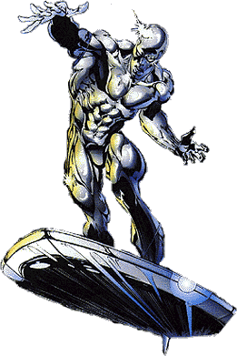

|
Introduction
Comics
Information
Allies
Villains
Action Figures
Photo Gallery
As A Whole
|
Information About


F irst
Appearance: Fantastic Four Vol. #48
Origin Issue: Silver Surfer Vol. 1 #1
Biographical Data
Real name: Norrin Radd
Former aliases: Herald of Galactus, Sky Rider, Sentinel of the Spaceways
Former Occupation: Scientist (When still Norrin Radd), Herald of Galactus.
Citizenship: None (Though in recent issues he has hinted that he will adopt
Earth as his new home.)
Place of Birth: Zenn-La, Deneb System, Milky Way Galaxy
Martial Status: Single (Though at one time betrothed to Shalla Bal.)
Known Relatives: Jartran Radd (Father, deceased), Elmar Radd (Mother,
deceased), Fennan Radd (Half-brother)
Known Confidants: Shalla Bal
Former Group Membership: The Defenders, The Star Masters
Extent of Education: Unrevealed, but highly educated on Zenn-La
Physical Description
Height: 6'4"
Weight: Unknown
Eyes: White
Hair: None
Other distinguished features: The Silver Surfer's skin is apparently a
flexible metallic silvery material.
The Silver Surfer has certain cosmic energy enhanced
perceptions which enable him through concentration to become aware of the
patterns of energy which surround him. Accordingly, he can sense great
concentrations or deployment of energy anywhere in the world. He has a
special affinity for the life energies of living beings, and can use his
cosmic powers to augment them to a certain degree. While he can use his
power to revitalize life energies and heal the wounded, he cannot create
life or restore life to the dead.
The Silver Surfer does not need to eat or breathe since
he absorbs life-maintaining cosmic energy direct through his skin. Although
his body does not require sleep, his mind still does in order to give it an
opportunity to dream.
By exceeding 99% of the speed of light (186,000 miles
per second), the Surfer can shift himself into hyperspace, a dimension in
which velocity is not limited by the speed of light. The Surfer can also
compress his own bodily matter so as to shift himself into a so-called
microverse. He once used his powers to travel through time, but may be
unable to engage in time travel under normal circumstances.
RETURN TO THE SILVER SURFER'S INTRODUCTION PAGE
|